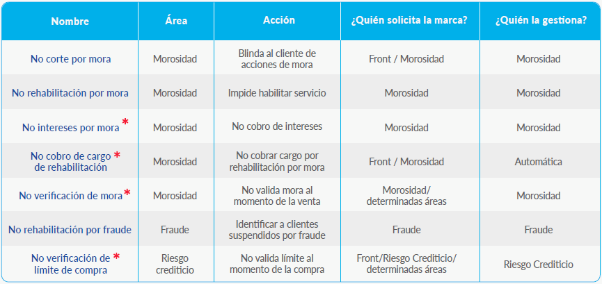

Desde la Vista Inicial podrás verificar si el cliente posee alguna Marca por Mora o Fraude. Para esto hacé click sobre el siguiente ícono en la Card de la línea :
Las distintas marcas por Mora o Fraude que podrán aplicarse a nivel Cliente, Cuenta o Servicio son las siguientes:
*Nuevas Marcas exclusivas de #Fan
Marca de No Corte por Mora
Esta marca se carga para evitar que se suspenda la línea en caso de que el cliente tenga algún reclamo en análisis. Puede solicitarse desde el buscador de gestiones a través de las palabras clave “Gestión de Marcas”. Podrás elegir si debe aplicarse a nivel Cliente, Cuenta o Servicio y si la duración será permanente o temporal (máximo 90 días corridos).
Marca de no cobro de cargo de rehabilitación por mora:
Se solicita en caso de que una línea haya sido suspendida por error, para evitar que se le cobren los cargos de rehabilitación.
Marca de no verificación de límite de compra:
Esta Marca se disponibilizará cuando se habilite la compra de equipos en #Fan, por este motivo aguardaremos hasta ese momento para profundizar en el tema.
Tené en cuenta que en todos los casos las marcas quedarán derivadas para su aprobación según criterio del área correspondiente. En caso de que la marca no se apruebe se le notificará al cliente de forma automática.
Habilitación y suspensión de procesos de mora ante reclamos de Clientes
Estos escenarios se resolvían de la siguiente manera en los sistemas Legados (Siebel/Celsis):
Por el contrario, ante reclamos de facturación o inconvenientes con pagos en #Fan se suspenderá automáticamente el proceso de mora y se habilitará el servicio independientemente del monto reclamado.